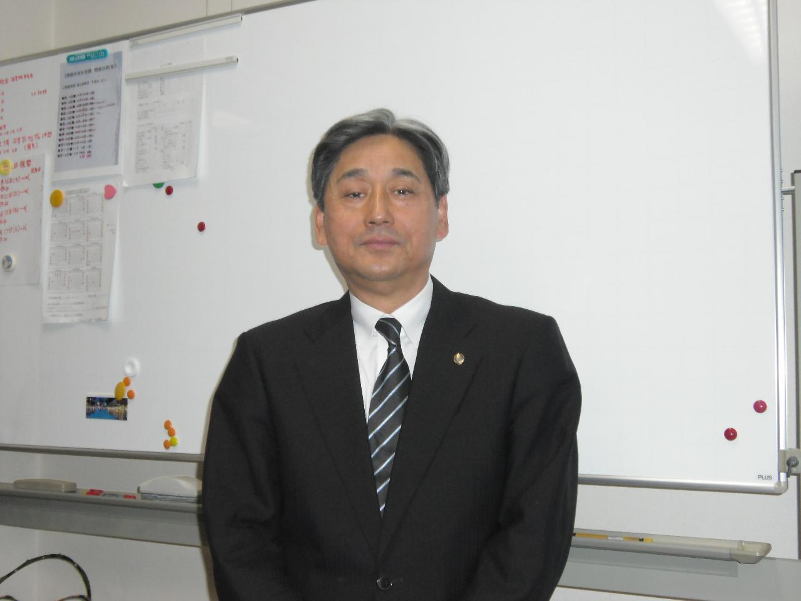

昭和63年創業、山形の地でお客様の期待を超えるサービスを提供し、
多方面の顧問先のお客様と信頼の絆を築いてまいりました。
税務・会計はもちろん、どんなお悩みごとでもお気軽にご相談ください。

私は、昭和６３年に税理士事務所を開設してから今日まで、多方面の顧問先のお客様と信頼の絆を築いていくことを重点においてきました。
税務、会計はもちろん他の些細なことでもお悩みごとがございましたら、お気軽に当事務所までご相談下さい。
プライバシーを守り、一生懸命お客様に満足していただくように努力させていただきます。
代表社員税理士 須藤行雄
税理士法人 須藤会計事務所はＴＫＣ全国会会員です
ＴＫＣ全国会は、租税正義の実現をめざし関与先企業の永続的繁栄に奉仕するわが国最大級の職業会計人集団です。
東北税理士会 山形支部 所属
ＴＫＣ全国会の基本理念である「自利利他」について、ＴＫＣ全国会創設者飯塚毅は次のように述べています。
大乗仏教の経論には「自利利他」の語が実に頻繁に登場する。解釈にも諸説がある。その中で私は「自利とは利他をいう」（最澄伝教大師伝）と解するのが最も正しいと信ずる。
仏教哲学の精髄は「相即の論理」である。般若心経は「色即是空」と説くが、それは「色」を滅して「空」に至るのではなく、「色そのままに空」であるという真理を表現している。
同様に「自利とは利他をいう」とは、「利他」のまっただ中で「自利」を覚知すること、すなわち「自利即利他」の意味である。他の説のごとく「自利と、利他と」といった並列の関係ではない。
そう解すれば自利の「自」は、単に想念としての自己を指すものではないことが分かるだろう。それは己の主体、すなわち主人公である。
また、利他の「他」もただ他者の意ではない。己の五体はもちろん、眼耳鼻舌身意の「意」さえ含む一切の客体をいう。
世のため人のため、つまり会計人なら、職員や関与先、社会のために精進努力の生活に徹すること、それがそのまま自利すなわち本当の自分の喜びであり幸福なのだ。
そのような心境に立ち至り、かかる本物の人物となって社会と大衆に奉仕することができれば、人は心からの生き甲斐を感じるはずである。
毎月、会計専門家が貴社を訪問し、次の業務を支援します。
法人税・所得税・消費税の申告書、各種届出書の作成
譲渡、贈与、相続の事前対策、申告書の作成
税務調査の立会い
その他税務に関する相談
試算表、経営分析表の作成
総勘定元帳の記帳代行
決算書の作成
会計処理に関するご相談
経営計画、資金繰り計画の相談、指導
各種書類の作成
代表社員税理士
昭和24年 山形市生まれ須藤法律事務所 所長
昭和53年 山形市生まれ
当事務所は、昭和63年から山形の地でお客様の期待を超えるサービスを提供し、
多くの信頼を築いてまいりました。
現在、社員15名（うち税理士2名）が在籍し、穏やかで真面目な所員が多い職場です。
当事務所は、税務・会計、経営助言等を通して、中小企業を中心にご支援しております。
当事務所は、昭和63年から山形の地でお客様の期待を超えるサービスを提供し、多くの信頼を築いてまいりました。
現在、社員15名（うち税理士2名）が在籍し、所長をはじめ、穏やかで真面目な性格の所員が多く、日々落ち着いた雰囲気の中、仕事をしております。
勤続約30年のベテランをはじめ、定着率が高く、税理士の勉強を行いながら業務に取り組んでいる20代のスタッフもおります。
この度、実務経験をお持ちの方を新たにお迎えしたいと思っています。もちろん「これから会計や税理士の仕事を学びたい」というフレッシュな方も歓迎いたします。
残業はほとんどないので、ワークライフバランスを保ちながら、また勉強と両立しての活躍が可能です。
〒９９０－２３１３ 山形市大字松原字下川原３３９－３９
税理士法人須藤会計事務所 採用担当者 宛
お気軽にお問合せください。